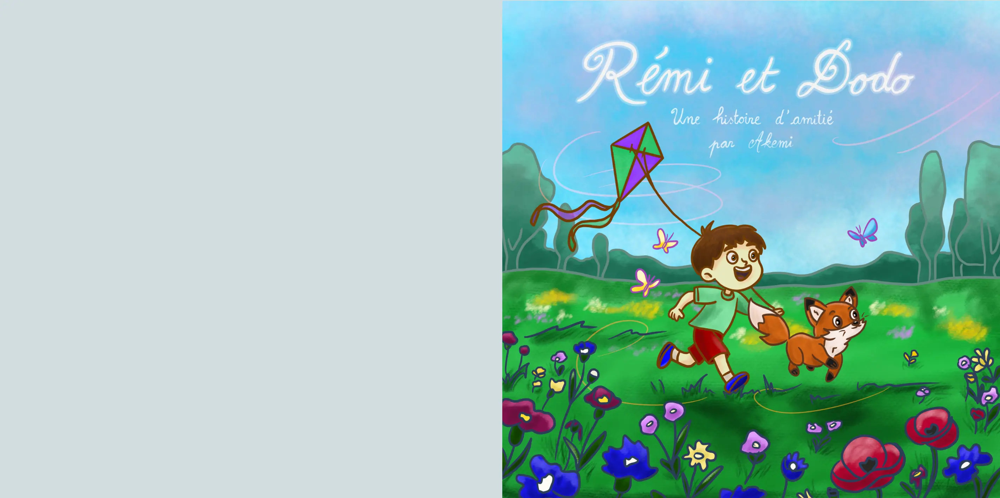
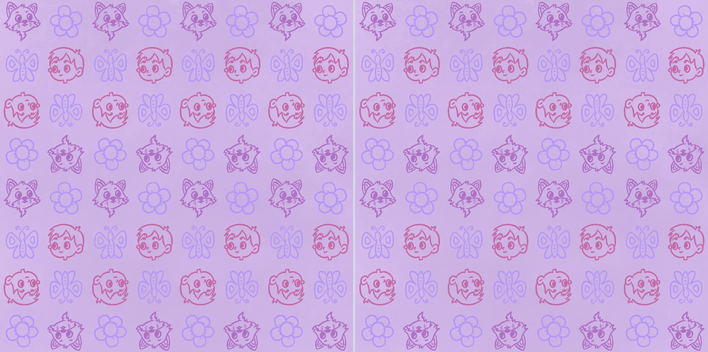
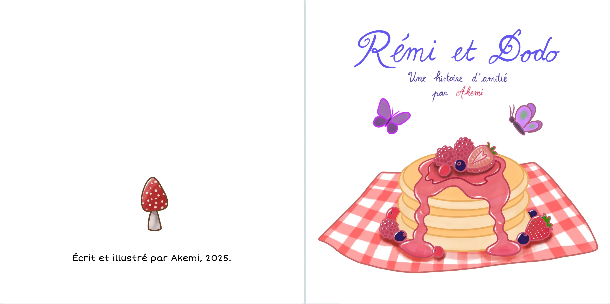
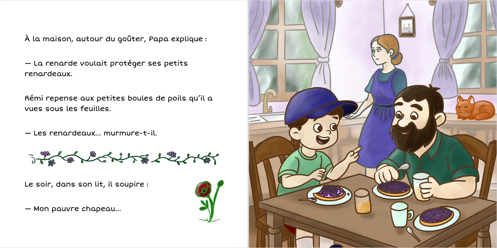
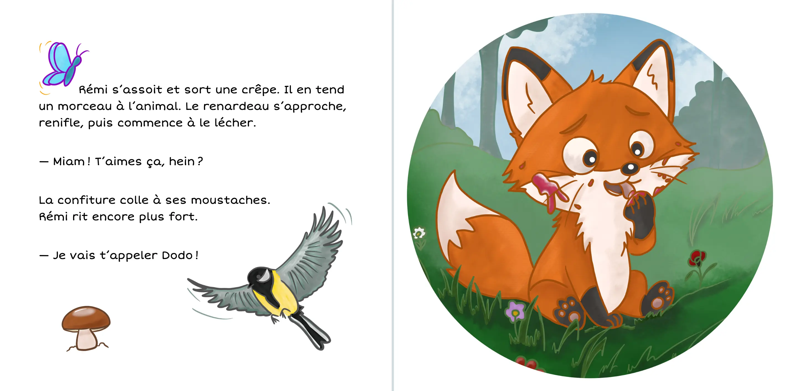
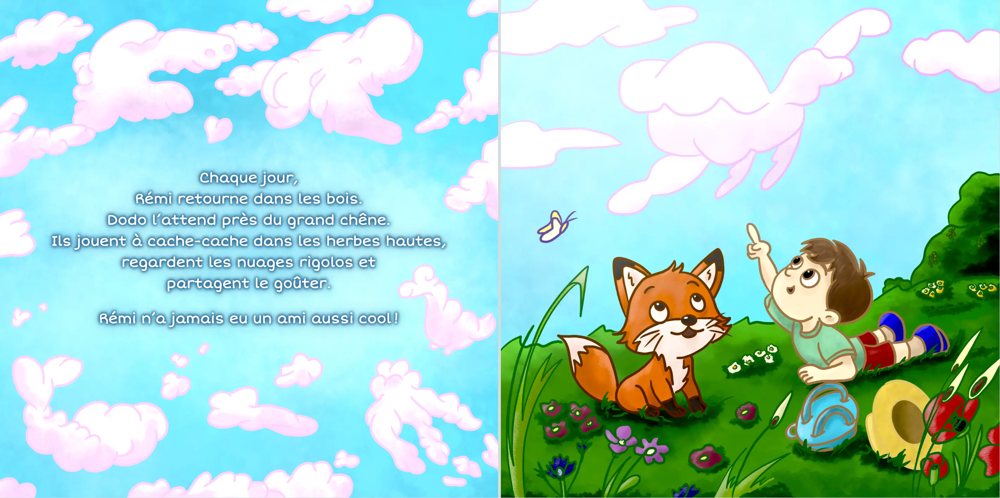
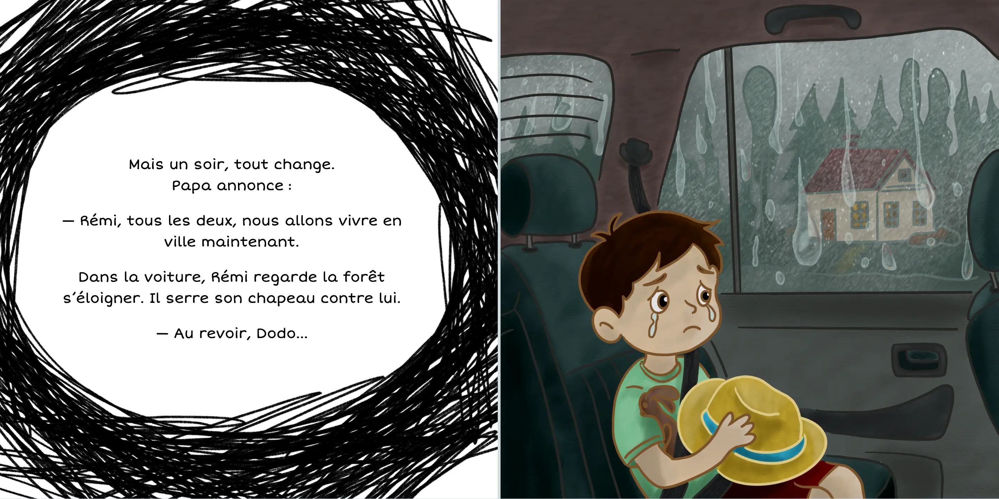
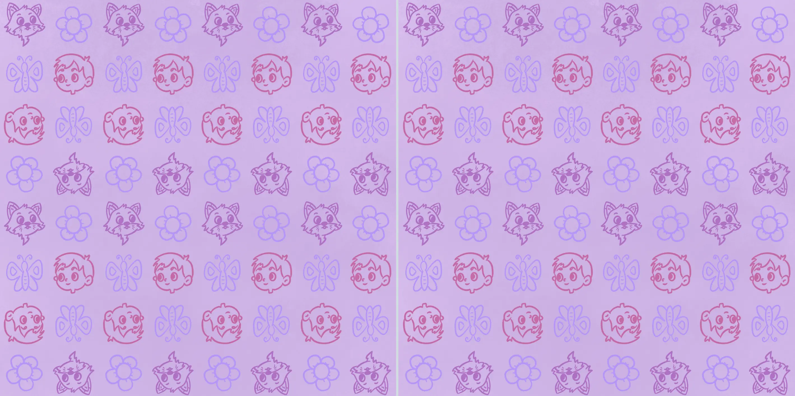
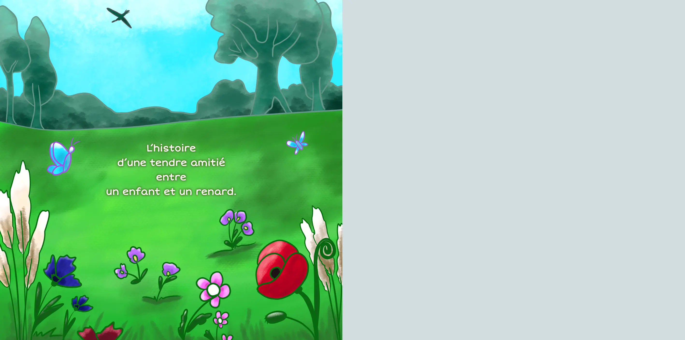

Rémi et Dodo, nouvelle illustrée pour enfants
Publié le 10/05/2026 dans Mes écrits.
Nouvelle illustrée pour enfants réalisée en 2025 dans le cadre d’un défi personnel avec Diatomée.
Après écriture, j’ai utilisé l’IA pour la composition des scènes, et je les ai ensuite dessinées sur tablette.
J’ai proposé Rémi et Dodo à plusieurs maison d’édition, sans succès 😟.
Environ 20 minutes de lecture. On peut cliquer sur les images pour les afficher en plus grand.



![Page de gauche : texte avec dessin de pomme de pin. Page de droite : dessins de Rémi et son père dans la forêt, ayant débusqué des renards. Voici le texte : Rémi adore aller se promener dans les bois avec son papa.
Il court, saute par-dessus les racines, fait s’envoler les papillons.
Mais soudain, au détour du sentier, un grand renard roux apparaît !
Ses yeux brillent et ses dents scintillent.
— Ooooh ! crie Rémi.
Papa le porte sur ses épaules et s’éloigne vite.
En courant, le chapeau de Rémi tombe par terre.](04.webp)

![Page de gauche : texte avec dessin de papillon jaune. Page de droite : dessin de Rémi dans la forêt avec le renardeau qui a volé son chapeau. Voici le texte : Le lendemain matin, pendant que Maman est occupée ailleurs, Rémi glisse deux crêpes dans son sac. Puis, ni vu ni connu, il repart vers les bois.
Il retrouve vite l’endroit. Mais quelle surprise ! Son chapeau est là… sur la tête d’un petit renard !
Le renardeau le regarde avec des yeux malicieux.
— Hé, toi ! s’écrie Rémi. Tu m’as volé mon chapeau !
Le petit renard, curieux, penche la tête. Le chapeau glisse et lui tombe sur les yeux.
Rémi éclate de rire !
— D’accord, petit farceur. Tu peux le garder un peu.](06.webp)



![Page de gauche : texte avec dessins de fleur, oiseau et champignon. Page de droite : dessins de Rémi adulte avec sa fille, dans la forêt, observés par un renard. Voici le texte : Les années passent.
Rémi est devenu grand.
Il revient dans la maison de sa maman avec sa petite fille, Lili.
Ils vont se promener dans les bois.
Lili rit en sautant dans les feuilles.
— Papa, regarde ! Un renard !
Rémi s’arrête.
Le bel animal roux les observe sans bouger.
Le cœur de Rémi bat très fort.
— Dodo ? chuchote-t-il.
Le renard incline la tête, puis s’enfuit doucement entre les arbres.](10.webp)
![Page de gauche : texte avec dessins de fleurs. Page de droite : dessin de Rémi adulte assis au clair de lune devant la maison avec le renard adulte. Voici le texte : Le soir, Rémi raconte toute l’histoire à Lili.
Elle écoute, les yeux grands ouverts.
— Tu crois que c’était vraiment ton ami ? demande-t-elle.
— Peut-être… répond Rémi en souriant.
Plus tard, il sort dans le jardin.
La nuit est pleine d’étoiles. Rémi entend un bruissement et tourne la tête.
Le renard est là, assis près de lui, le regard levé vers le ciel.
Rémi ferme les yeux.
Il se sent à nouveau comme un enfant, assis dans les bois, à côté de son ami Dodo.](11.webp)

